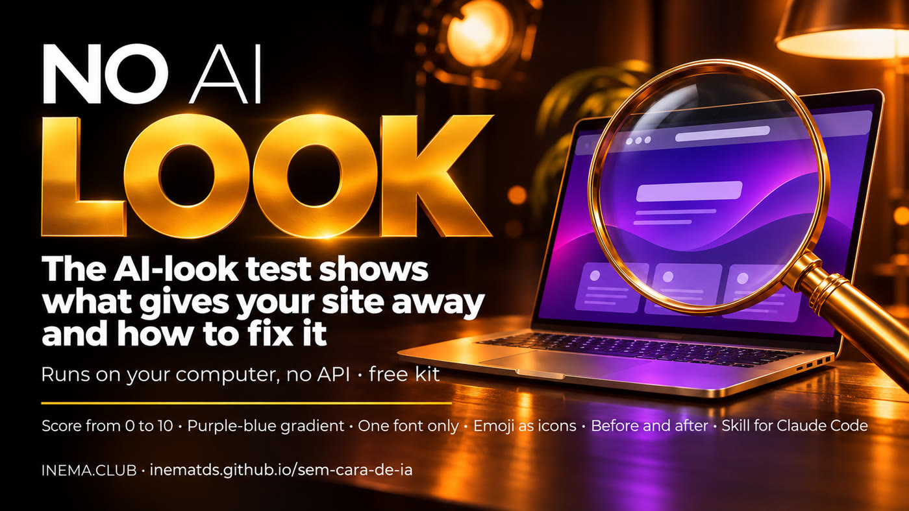
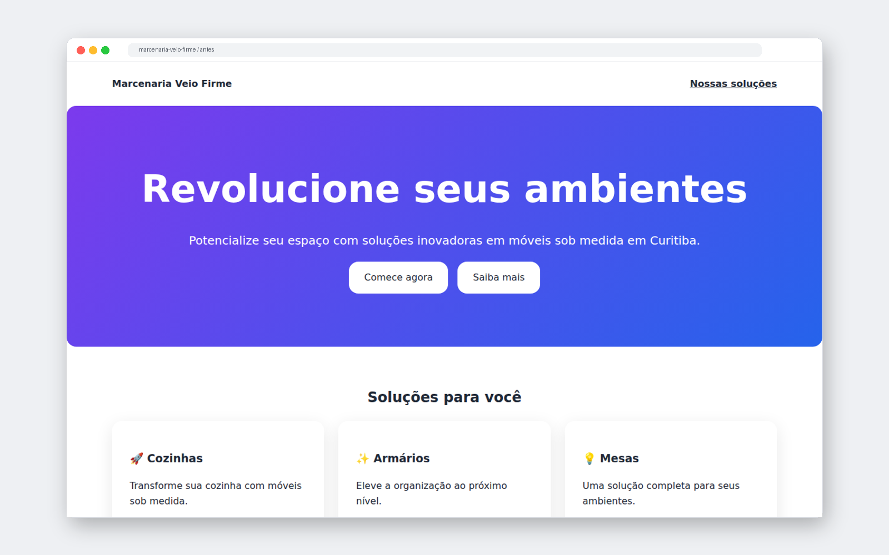
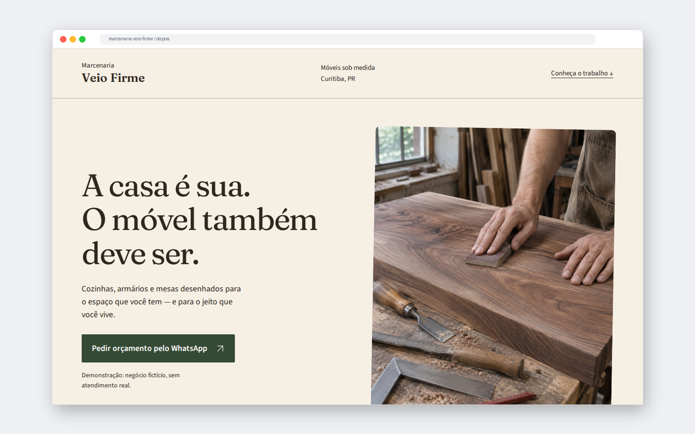
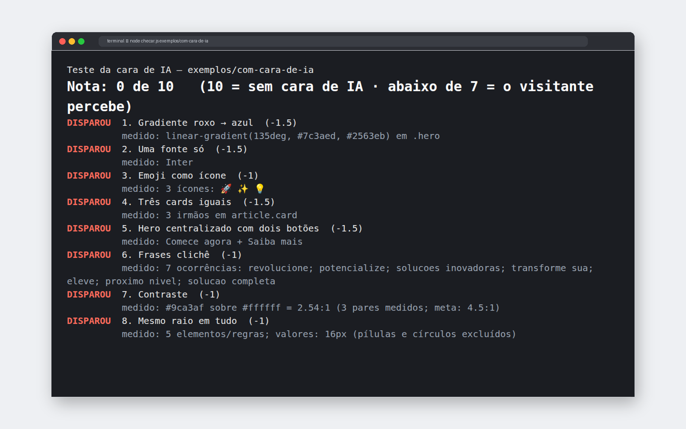

And customers notice in two seconds: they think your business is generic too and leave before reading what you do. The AI look test shows what gives your site away and how to fix it without losing what’s already done.

People who build websites with AI often get the same page: a purple and blue background, three identical boxes, an emoji instead of an icon, and phrases like “revolutionize your business.” Visitors have seen this a thousand times and associate your business with a ready-made template. The AI look test is a free kit that reads your page, looks for these signals, gives it a score from 0 to 10, and tells you how to fix each one. It runs on your computer, with no account and nothing sent outside. It comes with a skill for Claude Code to redesign the site for you and a list of verified open-source libraries.
Each sign alone isn’t a crime. Together, they make the site look like it came from the same mold as a thousand others. The test measures eight signs, each with a clear rule.
The background that fades from purple to blue is the default “sky” for generated pages.
Replace with a brand color, solid background, or real photo.
Using the same neutral font for headings and body text erases personality.
Replace with a distinctive heading and easy-to-read text; no more than two.
🚀 ✨ 💡 in headings look like automatic decoration and vary from device to device.
Replace with line icons from a single set, or none.
Three shadowed boxes with rounded corners give everything the same weight.
Replace with a featured item, a numbered list, or a photo of the work.
Centered title and “Get started” + “Learn more”: works for any company.
Replace with who it's for, what the person gets, and a button with the next step.
“Revolutionize,” “empower,” “innovative solutions”: vague promises in place of information.
Replace with deadline, price, location, and who's providing the service.
Light gray text on white is tiring and hard to see on a phone screen.
Replace with darker text, with a contrast ratio of at least 4.5 to 1.
The button, box, photo, and banner all have the same rounded corners: nothing has its own function.
Replace with intentional corner radii: small on fields, medium on cards.
dist folder); localhost is the site running only on your computer.A fictional woodworking shop, with the same content in both versions. The difference is the visual direction.


What makes a site look less AI-generated isn’t changing a button; it’s deciding how your business should look and applying that everywhere. The kit includes five ready-made directions, each with a Google Fonts pair, colors with measured contrast, corner sizes, and a page header style.
| Direction | Works well for | Fonts |
|---|---|---|
| Editorial handcrafted | woodworking, ceramics, studio, local producers | Fraunces + Source Sans 3 |
| Technical and precise | engineering, specialized maintenance, services that explain measurements or steps | Space Grotesk + IBM Plex Sans |
| Elegant classic | architecture, bookstore, small lodging business, calm-reading portfolio | Playfair Display + Lato |
| Welcoming for local services | neighborhood workshop, pet care, in-person classes, personal service | DM Serif Display + DM Sans |
| Bold and typographic | creative studio, cultural event, publication, portfolio with strong titles | Archivo + Archivo Narrow |
See the score and which signs your site has. The test saves a list of what to fix in a file. How to use ↓
Just one, based on your business. Mixing two makes it look like a ready-made template again.
The kit’s skill rewrites only the visuals and vague text. Where one of your facts is missing (price, timeline, city), it marks “FILL IN” instead of making something up.
Component libraries provide ready-made buttons, menus, and forms, and work well with Claude Code. But the most famous library, with its default theme, is one of the looks most associated with AI. Install it, apply your visual direction, and run the test again.
shadcn/ui, Radix, Magic UI, daisyUI, Ark UI, Headless UI, HeroUI, Mantine, Flowbite, Motion Primitives, and coss ui: license, website, repository, and installation command verified on 12/11/2026.
React Bits uses the MIT license with Commons Clause: you can use it on your site, but you can’t resell the components. The list will let you know.
Lucide and Tabler, to replace the emoji with icons from a single set, all with the same stroke weight.
The full table, with the commands and how each one connects to Claude Code: bibliotecas.md (in Portuguese).
Three free INEMA kits that complement one another.
Create a site with its own style based on references you choose.
Measures signs of a generic site and fixes them with a visual direction.
Check whether the site brings in customers: call to action, proof, pricing, next step.
From here on, it’s the technical part: download, run the test, and install the skill. You doesn't need to from this section to understand what’s above.
The test measures signs of a generic website. It no finds out who built the site: a hand-built page can have these signs too, and a high score doesn’t guarantee a good site.
A Node.js script with no dependencies, API, or internet access. It reads the HTML, page styles, and local CSS files.
Reads the classes from the attribute class (from-purple-500, rounded-2xl, text-gray-400) and finds the same signs in them.
Run the test, choose a direction, rewrite the design in a copy, and test again until the score is 8 or higher.
The score starts at 10 and loses the weight of each triggered sign (1 or 1.5 points). Below 7, visitors notice. Exit code: 0 with a score of 7 or higher, 1 below 7, 2 on invalid input. The exact rules are in referencias/sinais.md (in Portuguese).
Check with the command below. If you don't have it, download it from nodejs.org (LTS version) or ask Claude Code to install it.
node --versionTo download the kit:
git clone https://github.com/inematds/sem-cara-de-ia cd sem-cara-de-ia
The file, folder, or website running at http://localhost. In React/Vue, use the build’s HTML (e.g., dist/index.html).
To see what the output looks like before testing your website:
node checar.js exemplos/com-cara-de-ia # score 0 out of 10 node checar.js exemplos/sem-cara # score 10 out of 10
It can be the file or the folder (it reads the index.html) or the site running on your computer:
node checar.js ~/meu-site/index.html node checar.js ~/meu-site node checar.js http://localhost:3000/ # other options: --json (for automation) · --sem-cor
The file is ready to paste into your coding agent:
node checar.js ~/meu-site --md consertar.md
The skill’s folder includes the script; it works on its own once copied:
mkdir -p ~/.claude/skills cp -r skill/sem-cara-de-ia ~/.claude/skills/
Open Claude Code in your website’s folder (preferably in a branch or a copy) and type:
remove the AI look from my site. Direction: artisanal editorial. # without specifying a direction, the skill chooses based on the type of business and explains why
It runs the test, shows the score, rewrites the generic visuals and copy, marks [PREENCHA: …] where a fact about you is missing, then run the test again until you get a score of 8 or higher.
The test doesn’t run JavaScript, inspect images, or download external CSS. Open the result on your phone and computer before publishing.
node --test # the kit’s own tests
| Page | What it is | Note |
|---|---|---|
exemplos/com-cara-de-ia | the woodworking shop as delivered by AI (HTML + CSS) | 0 out of 10 · 8 signals |
exemplos/tailwind | the same look, made only with Tailwind classes | 0 out of 10 · 8 signals |
exemplos/sem-cara | the woodworking shop with an editorial, handcrafted direction | 10 out of 10 · none |
